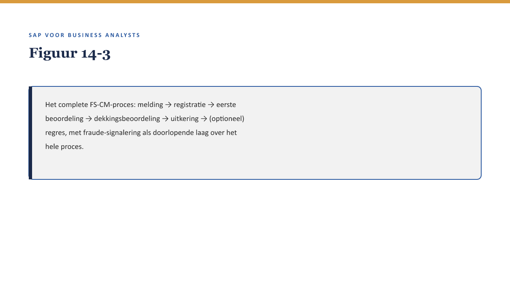

Cursus SAP voor Business Analysts · Niveau 2 (Professional) · Deel 14 van 30
FS-CM: het schadeproces II
Deel 13 eindigde bij de eerste beoordeling van een claim. Youssef vervolgt: “Wat een verzekeraar daadwerkelijk onderscheidt van een verzekeraar op papier, gebeurt hierna.” Dit deel behandelt wat er gebeurt zodra een claim is beoordeeld: de uitkering zelf, de mogelijkheid van regres, en het signaleren van fraude.
11secties
±30minleestijd + werkboek
6werkboekopdrachten
3figuren
Positionering. Deze Ductus-opleiding leert business analisten SAP zelfstandig lezen en beoordelen in een SAP-implementatietraject — geen configuratie- of programmeercursus, wel de vaardigheid om een consultant en ontwikkelaar te kunnen tegenspreken. Dit materiaal is onafhankelijk ontwikkeld door Ductus B.V. en niet gelieerd aan of goedgekeurd door SAP SE.
Niveau 2: Deel 11 — FS-PM: het polisproces → Deel 12 — FS-PM: configuratie en rolverdeling → Deel 13 — FS-CM: het schadeproces I → Deel 14 — FS-CM: het schadeproces II (hier) → Deel 15 — De financiële schaduw van elk proces → Deel 16 — Documenten & documentflow → Deel 17 — Organisatiestructuur & determinatie → Deel 18 — Status, berichten & output → Deel 19 — Case: Order-to-Cash ontleed → Deel 20 — Case: Claims-to-Payment ontleed → Deel 21 — Ketenintegratie: polis, claim en financiën samen → Deel 22 — Examentraining + capstone
01
Leerdoelen
⏱ 3 min
Na dit deel kun je:
het vervolg van het schadeproces beschrijven: uitkering, regres, fraude-signalering;
uitleggen hoe een uitkering wordt gekoppeld aan FS-CD (↗ deel 15) en Accounting;
fraude-signalering op BA-niveau plaatsen: wat een BA moet kunnen beoordelen zonder zelf fraudeanalist te worden;
een volledig schadeproces (deel 13 + 14) in één procesplaat beschrijven, van melding tot uitkering;
een fit-gap-analyse voor het volledige FS-CM-proces zelfstandig opstellen.
Studielast: één dagdeel klassikaal, circa drie uur zelfstudie.
02
Van claim naar uitkering
⏱ 3 min
Deel 13 eindigde bij de eerste beoordeling van een claim. Youssef vervolgt: “Wat een verzekeraar daadwerkelijk onderscheidt van een verzekeraar op papier, gebeurt hierna.” Dit deel behandelt wat er gebeurt zodra een claim is beoordeeld: de uitkering zelf, de mogelijkheid van regres, en het signaleren van fraude.
Figuur 14-1 — Het procesoverzicht van deel 13 uitgebreid met drie nieuwe stappen: uitkering, regres, fraude-signalering.
03
Waarom dit voor de BA telt
⏱ 3 min
Waarom dit voor de BA telt
Dit is het punt waarop het schadeproces daadwerkelijk geld beweegt — en waar de kwaliteit van eerdere stappen (deel 13) direct financieel zichtbaar wordt. Een fout die bij melding of dekkingsbeoordeling ontstond, manifesteert zich hier als een verkeerde uitkering.
04
Uitkering: de koppeling naar FS-CD en Accounting
⏱ 3 min
Zodra een claim is goedgekeurd, moet het uitkeringsbedrag daadwerkelijk worden uitbetaald. Dit loopt via FS-CD (↗ deel 15) — dezelfde inningen-en-uitbetalingenmotor die ook premie-incasso verwerkt (deel 1, niveau 1) — en landt uiteindelijk in Accounting (het generieke FI, ↗ deel 1 §3.1) als boeking.
Figuur 14-2 — Een uitkering die van FS-CM naar FS-CD naar Accounting reist — dezelfde route als premie-incasso, nu in omgekeerde richting.
Kernzin
FS-CD verwerkt zowel geld dat binnenkomt (premie) als geld dat uitgaat (uitkering) — hetzelfde mechanisme, twee richtingen. Dit is waarom deel 15 (De financiële schaduw) relevant is voor zowel het polis- als het schadeproces.
05
Regres: geld terugvorderen van een derde
⏱ 3 min
Regres is het recht van de verzekeraar om een uitgekeerd bedrag terug te vorderen van een derde partij die aansprakelijk is voor de schade (bijvoorbeeld een andere verzekeraar bij een aanrijding met twee partijen). Voor een BA is relevant: regres is een apart, vaak later proces dat losstaat van de oorspronkelijke uitkering aan de polishouder — de polishouder wordt niet opgehouden totdat regres is afgerond.
06
Fraude-signalering op BA-niveau
⏱ 3 min
Wat een BA wél doet
Een BA is geen fraudeanalist, maar kan wel meedenken over signalen die een fraudecontrole zouden moeten triggeren: ongebruikelijke patronen (bijvoorbeeld meerdere claims kort na elkaar op verschillende polissen van dezelfde polishouder), of een claim die opvallend snel na het ingaan van een dekking wordt ingediend.
Waar de grens ligt
De BA-rol stopt bij het signaleren van zulke patronen als functionele eis voor het systeem (“markeer claims die binnen dertig dagen na polisaanvang worden ingediend voor extra beoordeling”) — niet bij het zelf beoordelen of een specifieke claim frauduleus is. Dat laatste is specialistenwerk, vergelijkbaar met hoe deel 1 §5.1 de grens tussen BA en consultant trok.
Kernzin
Fraude-signalering is, net als elke bedrijfsregel (↗ deel 5-6, niveau 1), een plek waar de BA de organisatievraag stelt (“welk patroon willen we automatisch laten opvallen”) en specialisten de uitvoeringsvraag beantwoorden (“hoe bouwen/configureren we dat, en hoe beoordelen we een gevonden signaal”).
07
Het volledige schadeproces in één plaat
⏱ 3 min

Figuur 14-3 — Het complete FS-CM-proces: melding → registratie → eerste beoordeling → dekkingsbeoordeling → uitkering → (optioneel) regres, met fraude-signalering als doorlopende laag over het hele proces.
Dit overzicht is het fundament voor deel 20 (Claims-to-Payment ontleed), waar dit proces end-to-end wordt geanalyseerd zoals deel 19 dat voor FS-PM’s Order-to-Cash doet.
08
Kruisverwijzingen
⏱ 3 min
↗ Deel 15: FS-CD en Accounting, hier al aangeraakt bij uitkering.
↗ Deel 20: Claims-to-Payment ontleed — de end-to-end analyse van dit hele proces.
↗ Deel 21: Ketenintegratie — waar FS-PM en FS-CM elkaar raken, bijvoorbeeld bij premievrijstelling na een claim.
Na goedkeuring van een claim volgt uitkering, via FS-CD naar Accounting — dezelfde route als premie-incasso, nu in omgekeerde richting.
Regres is het terugvorderen van een uitkering bij een aansprakelijke derde, een apart en vaak later proces.
Een BA signaleert fraudepatronen als functionele eis, maar beoordeelt zelf geen individuele claims op fraude.
Het volledige FS-CM-proces loopt van melding tot uitkering, met fraude-signalering als doorlopende laag.
Dit procesoverzicht is het fundament voor de end-to-end analyse in deel 20.
11
Werkboek — opdrachten
⏱ 5 min
Vijf opdrachten en een oefentoets van tien vragen.
Werkboekopdrachten
Uit Werkboek deel 14, letterlijk overgenomen (inclusief uitwerkingen)
Opdracht 14.1 — De route van een uitkering (10 min, individueel)
Zet in de juiste volgorde: Accounting, claim goedgekeurd, FS-CD, uitkering ontvangen door polishouder.
✓UitwerkingToon antwoord
Claim goedgekeurd → FS-CD → uitkering ontvangen door polishouder → (boeking in) Accounting. (De boeking in Accounting kan technisch parallel of net na de daadwerkelijke uitbetaling lopen; de kern is dat FS-CD tussen goedkeuring en uitbetaling zit.)
Opdracht 14.2 — Regres of geen regres? (10 min, individueel)
a. Een polishouder krijgt schade uitgekeerd na een aanrijding waarbij de andere partij verantwoordelijk was. b. Een polishouder krijgt schade uitgekeerd na eigen onvoorzichtigheid zonder derde partij.
✓UitwerkingToon antwoord
a. Regres mogelijk — een aansprakelijke derde partij is aan te wijzen. b. Geen regres — geen derde om op te verhalen.
Opdracht 14.3 — Signaleren, niet beoordelen (15 min, tweetallen)
Formuleer een functionele eis (geen technische oplossing) voor het signaleren van claims die kort na de start van een dekking worden ingediend — zonder zelf te bepalen wanneer zoiets frauduleus is.
✓Uitwerking — voorbeeldantwoordToon antwoord
“Markeer claims die binnen dertig dagen na de ingangsdatum van de dekking worden ingediend, voor extra beoordeling door een specialist — het systeem beslist niet zelf of dit fraude is, het signaleert alleen.” Dit respecteert de grens uit reader §5.2: de BA formuleert het signaal, niet het oordeel.
Opdracht 14.4 — Het volledige proces tekenen (20 min, groepjes van drie)
Teken (op papier of whiteboard) het volledige FS-CM-proces van melding tot uitkering, inclusief waar fraude-signalering als laag over het proces heen ligt.
✓Uitwerking — begeleidingsnotitieToon antwoord
Vergelijk met figuur 14-3. Let erop dat groepen fraude-signalering niet als losse, aparte stap tekenen maar als doorlopende laag — dat is het punt van reader §5.2 en figuur 14-3.
Opdracht 14.5 — Je eigen regres-of-fraude-voorbeeld (10 min, individueel, huiswerk)
Bedenk een fictief voorbeeld uit de verzekeringspraktijk van regres, en een apart voorbeeld van een fraudesignaal (geen fraudeoordeel).
✓Uitwerking — begeleidingsnotitieToon antwoord
Geen vast antwoord; bespreek kort in de volgende sessie.
Oefentoets — tien vragen
1. Via welke module loopt een uitkering? A. FS-PM. B. FS-CD. C. BRFplus. D. TMF.
2. Wat is regres? A. Het opnieuw beoordelen van een polis. B. Het terugvorderen van een uitkering bij een aansprakelijke derde. C. Een type BTX. D. Een foutmelding.
3. Waarom wordt een polishouder niet opgehouden totdat regres is afgerond? A. Dat gebeurt wel. B. Regres is een apart, vaak later proces, los van de uitkering aan de polishouder. C. Regres bestaat niet. D. Regres gaat altijd vooraf aan uitkering.
4. Wat doet een BA bij fraude-signalering? A. Zelf beoordelen of een claim frauduleus is. B. Functionele signaleringseisen formuleren, niet het oordeel zelf vellen. C. Niets, dit is geen BA-taak. D. De fraudeanalist vervangen.
5. Wat is het verband tussen FS-CD bij premie-incasso en bij uitkering? A. Geen verband, twee aparte systemen. B. Hetzelfde mechanisme, twee richtingen: geld in en geld uit. C. FS-CD verwerkt alleen premie. D. FS-CD verwerkt alleen uitkeringen.
6. Wat is een goed voorbeeld van een fraudesignaal-eis? A. “Bepaal of deze claim fraude is.” B. “Markeer claims kort na dekkingsstart voor extra beoordeling.” C. “Keur alle claims automatisch goed.” D. “Verwijder verdachte claims automatisch.”
7. Wat volgt na de eerste beoordeling en dekkingsbeoordeling uit deel 13? A. Alleen registratie. B. Uitkering, eventueel gevolgd door regres, met fraude-signalering als doorlopende laag. C. Niets, het proces stopt daar. D. Een nieuwe BTX.
8. Waar landt een uitkering uiteindelijk boekhoudkundig? A. Nergens, uitkeringen worden niet geboekt. B. In Accounting (FI), via FS-CD. C. Alleen in FS-PM. D. In BRFplus.
9. Waarom is dit deel het fundament voor deel 20? A. Geen verband. B. Het volledige procesoverzicht (melding tot uitkering) is de basis voor de end-to-end Claims-to-Payment-analyse. C. Deel 20 gaat alleen over FS-PM. D. Deel 20 herhaalt alleen de examenstof.
10. Wat onderscheidt fraude-signalering van andere bedrijfsregels in deze cursus? A. Niets, het volgt hetzelfde patroon: BA stelt de organisatievraag, specialisten de uitvoeringsvraag. B. Fraude-signalering is volledig technisch, geen BA-rol. C. Fraude-signalering bestaat niet in FS-CM. D. Fraude-signalering vervangt dekkingsbeoordeling.
✓AntwoordenToon antwoord
1B 2B 3B 4B 5B 6B 7B 8B 9B 10A
Verder naar deel 15
Deel 15 — De financiële schaduw van elk proces — bouwt voort op wat hier is behandeld.